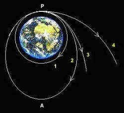

Les prédictions des scientifiques prévoient l'explosion du soleil dans moins de 5 milliards d'années ce qui causera la fin de l'humanité.
Pour préserver l'humanité le seul moyen est de quitté notre système solaire carla mort du soleil aura un impact sur tout le système.
Notre TPE a pour but de trouver le moyen de quitter notre sytème solaire et de nous engager dans un des premiers voyage intergalactique.
Nous allons essayées de répondre à la question : à cause du soleil en déclin, l'humanité sera-t-elle capable de quitter le système solaire ?
Notre TPE se compose de trois parties : le système solaire, les forces qui nous empêchent de partir et les moyens misent en place pour partir.
Notre système solaire et l'après composé de plusieurs phases et de plusieurs parties.Tout d'abord, au centre se trouve le soleil autour duquel orbitent les planètes de notre système solaire. Lors de notre voyage nous serons confrontés à de potentiels obstacles.
Le premier sera la ceinture d'astéroïdes se trouvant entre Mars et Jupiter, composées de plusieurs millards de débris célestes, même si la peur d'une collision est importante les risques en revanche sont moindres car même s'ils sont tres nombreux à l'échelle humaine les debris présent dans la couronne sont trés espacés.
A la sortie du système solaire, nous rencontrerons le choc terminal. Il représente la limite après laquelle les vents solaires diminuent considérablement, ils passent d'une vitesse de 400 km/s à la vitesse du son soit 340,29 m/s. La sonde Voyager 1 a déjà dépassé ce choc et aucuns problèmes n'a été rencontré pendant ou après ce passage, il n'y a donc pas de risque pour notre vaisseau.
La zone se situant après le choc terminal s'apelle l'héliogaine. Elle est composée des vents solaires, d'hélium et d'hydrogène. L'espace entre la fin de notre système solaire et l'héliopause, comprenant le choc terminal et l'héliogaine, se nomme l'héliosphère, elle a une longueur de 100 UA ( 1 UA = 1,496*10^8 )
Grâce à la sonde Voyager 1, une nouvelle zone a été découverte, il s'agit de l'héliopause.Cette zone est la limite où les particules émises par le soleil entrent en collision avec les particules interstellaires. Après cette collision toutes ces particules ralentissent en émettant de l'énergie. Comme beaucoup de particules s'accumulent à l'intérieur et autour de l'héliopause et qu'elles sont fortement énergisées par leur décélération, une onde de choc se créée.
A notre sortie de l'héliopause nous rencontrerons la ceinture de Kuiper. Cette ceinture est constituée d'astéroïdes et de comètes. Elles appartient au plan du système solaire. Comme pour la ceinture d'astéroïdes,les risques de collisions sont faibles.
Enfin, le dernier obstacle à franchir est le nuage d'Oort. Tout comme la ceinture de Kuiper il est composé d'astéroïdes et de comètes mais dans une quantité beaucoup plus importante.Une des autres grandes différences entre les deux zones est que le Nuage d'Oort englobe tout les obstacles décrits précédement.
Tout les obstacles connus de nos jours ne sont pas un problème pour nous car nous pouvons les passer.
Les forces qui nous empêchent de partir
La principale force qui nous empêche de partir est la forces de gravitation. La gravitation est une interaction physique causant l'attraction des corps sous l'effet de leur masse et une des quatre grandes interactions fondamentales de la physique. La gravitation possède sa relation : la relation de gravitation
En sachant que :
Comment la contrer ?
Pour quitter notre planète il faut donc pouvoir contrer la force de gravitation. Lors de mes recherches la notion d'anti-gravité est souvent apparue. Cette technologie reposerait sur un effet gyroscopique Cependant l'anti-gravité reste encore une idée. En effet personne n'a encore développé un objet ou une machine appliquant cette idée. Aucunes recherches concluantes ayant été publiées, cela ne semble pas être la solution.
Le seul moyen de contrer la force de gravitation, de nos jours, est d'atteindre la vitesse de libération. La vitesse de libération est une vitesse à laquelle un corps doit être propulsé, depuis la Terre, pour échapper à la gravitation.
La formule de la vitesse de libération est

Sur ce dessin la vitesse de libération correspond à la courbe 4 et le point p au départ. La courbe numéro 3 représente la vitesse de libération minimale. Pour cette vitesse l'objet est propulsé moins loin et plus près de la planète que pour l'objet de la courbe 4.
En 2016 le poids de l'humanité est de 304 millions de tonnes. Je prends donc cette valeur pour calculer la vitesse de libération. Cependant La vitesse de libération obtenue par ce calcule correspond à la vitesse minimal à atteindre pour envoyer l'humanité seulement dans l'espace. Dans ce calcul, n'ayant pas de données suffisante, cette vitesse de libération ne prend pas en compte le poids de la machine ni du carburant. Cette vitesse n'est donc pas la vitesse à atteindre.
Une idée de projet est déjà en cour de développement : projet breakthoug starshot.
Cette année nous avons pu découvrir le projet de voyage interstellaire de Stephen Hawking financé par Mark Zuckerberg et le milliardaire Yuni Milner. Ce projet à pour nom : Breakthough Starschot. Ce projet repose sur le principe de propulsion photonique qui serait amélioré par l’utilisation de lasers au sol ou en orbite. Pour ce projet, Hawking souhaite utilisé ce procédé pour envoyer de petits vaisseaux spatiaux vers Alpha Centauri soit à 4,37 années lumière de notre planète. Pour cela il dispose d’un budget de 100 millions de dollars. Ce projet s’inspire de la technique de voile. Cette technique est un procédé qui consiste à utiliser les photons du soleil pour frapper une voile qui profite d’une partie de leur énergie pour avancer. Cependant ni la NASA, ni Hawking veulent dépendre du soleil pour faire avancer le vaisseaux. Ils ont donc décidé de modifier la source des photons en utilisant, à la place du soleil, de puissants lasers. Le fonctionnement du projet se base sur ces lasers. En effet depuis la Terre ou en orbite autour de la Terre, les faisceaux lasers seront dirigés vers les vaisseaux afin de créé un rayon, d’une puissance combinée de 100 Giga watts, concentré sur la voile. Ce faisceau permettrait aux engins de rejoindre Alpha Centauri en voyageant à une vitesse de 6,0.107 m/s soit 20 % de la vitesse de la lumière. A cette vitesse les vaisseaux atteindraient leur destinations en une vingtaine d’années. En comparaison la sonde voyager 1 ne va qu’à 0,006 % de la vitesse de la lumière. Cependant le premier projet de voile, cosmos 1, lancé par la Russie en 2002 fut un échec. Même si le projet est en cour de développement de nombreux obstacles se dressent devant lui comme le fait viser la voile ainsi qu'un projet comportant des distances aussi considérables n'a jamais été expérimenté. De nombreux autres défis sont encore à relevés pour que ce projet puisse réussir. Cependant si il se concrétise, ce projet sera une des plus grandes réussites et avancée scientifique du XXIème siècle.
Nous savons quels sont les obstacles qui nous faudra éviter et quels sont les forces qui nous empêche de partir. Cependant, nous ne savons pas par quels moyens nous allons pouvoir quitter le système solaire.
En effet, différents types de propulseurs sont à notre disposition, nous en retiendrons deux: les moteurs chimiques et les moteurs ioniques. les moteurs chimiques sont de parfait candidats pour nous propulser suffisament afin de défier la gravité terrestre.
Le fonctionnement d'un moteur chimique est le suivant: un gaz sous pression est expulsé depuis la tuyère, ce gaz est produit grâce à la réaction entre un carburant et un comburant (la fusée Arianne 5 à été propulsée grâce aux carburant de dihydrogène liquide et le comburant dioxygène liquide).
malheuresement, ce moyen de propulsion à ses défaults. le comburant et le carburant et le comburant s'épuise très vite, ce qui rend les voyages à très grande distances extrémement compliqué.
C'est pour cela que nous allons nous interesser aux moteurs ionique.
Pour faire fonctionner un moteur ionique, il faut stocker du gaz (comme du xénon par exemble) dans lequel on rajouter des électrons pour le ioniser. Les ions sont ensuite accélérés avant d'être expulsés à plusieurs centaines d ekilomètres par seconde. Cette expulsion crée une poussée qui permet à la fusée d'avancer.
La pousée exercée est trop faible pour défier la gravité terrestre mais suffisante pour faire avancer le vaisseau.En plus, ce type de moteur consomme très peu ce qui rend le rend très intéressant pour les long voyages interstellaire.
Donc nous pouvons utiliser des moteurs chimiques pour contrer la force exercée par la Terre et utilisé des moteurs ioniques pour faire le trajet jusqu'au nuage d'Oort.
J'aurai pu parler des autres type de moteurs mais soit ils sont toujours en cours de réflexion soit ils posent d'enormes problèmes
Nous avons vu que les obtacles présents lors de ce voyage ne sont pas un problème parce qu'ils peuvent être contournés. Quant aux forces qui nous empechent de partir, elles, peuvent être défiées. Cependant nous manquons de moyens pour reussir à quitter le système solaire mais ce voyage sera peut-être possible avec l'avancée des technologies.